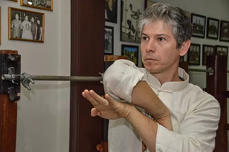

Treino de Wing Chun Tradicional
Por Thomas Pinheiro
Muito se discute sobre ministrar treino tradicional ou modernizar com sparring e equipamentos. Desde 2002 a Academia Pinheiros tem assumido uma postura em seus treinos de passar um ensino tradicional, porém mais que isso, resgatar e manter a aplicabilidade de movimentos, muitos de fora perguntam o que é tradicional? Tradicional é manter o ensino de técnicas o mais fiel possível ao último aprendizado com seu sifu ( e ele respectivamente ao mestre dele). Muitos se prendem a copiar exatamente apenas os movimentos sem estuda-los posteriormente. Ninguém aprende sem ter dúvidas e procurar soluções para elas.
O que se vê em nosso treino é utilizar exatamente os movimentos aprendidos pelo sifu Thomas Pinheiro de seu mestre Thomas Lo, porém com uma dinâmica de treino que possibilita ao aluno aprender da forma mais rápida, incorporando o sistema wing chun, trabalhando pontos como estrutura, mecânica, velocidade, soltura, explosão, potência, noção de distância, etc.... Em se tratando de um treino diário onde há com certeza muita repetição para absorção de movimento e melhoria na prática, se fazem presentes adaptação de equipamentos e de aulas " sempre com um diferencial"; não cair numa rotina desgastante se torna inprescindivel para que seja produtivo o treino.
Toda semana temos um aspecto diferente no treino, as vezes muito focado nas andadas e suas aplicações, ou mais treino em chi sau, ou mais aplicações de forma, mas o que vai surgindo são experiências novas, em ângulos, diferenças de estaturas de adversários, peso, qualidade técnica, fluidez, então tudo isso faz estar repensando e recolocando ideias baseadas na técnicas aprendidas de forma tradicional.Utilizando todos os recursos que a academia hoje oferece, espaço, equipamentos, conhecimento, experiência de ensino, os métodos vão surgindo como uma bola de neve. Só a academia ou o professor fornecer facilidades não bastam, o praticante precisa se conscientizar da importância de uma prática assídua seja na academia ou em casa, principal elemento: auto observação, seja ela no campo visual ou sensorial. Esta auto observação e a vontade de corrigir exercitando é o que leva a um nível mais alto.
Pancadas virão, tristeza por não conseguir é comum, ficar chateado também, mas fazem parte do crescimento emocional. Nem sempre temos os resultados de treino que queremos logo no início, pois o básico que se aprende não é de começo ter resposta exata para tudo, mas com muita experiência pode com seu básico muito bem treinado trazer as soluções, sem contar que níveis mais avançados são justamente as técnicas básicas treinadas com uma perspectiva nova e algum a mais, que permitem desafios maiores e aplicações mais contundentes.
Então, voltando ao ensino tradicional, se você tem a pretensão de estudar a fundo um estilo, representar as raízes dele, você se entrega ao treino, com certeza, ao se tornar fluida sua técnica, seu treino e seu conhecimento sobre ele. Estará sendo tradicional. O treino deve preparar o aluno para situações reais, as soluções mais breves. Este é o motivo de não valorizarmos o treino de sparring com rounds e regras, pois perderia o conceito de marcial.
Nomes em genealogias podem ter ou não peso de tradicional, então nada mais importante do que manter seu vinculo de treino, sempre aperfeiçoando nas bases do estilo, mantendo contato com seu mestre. A conclusão sobre treino e ensino me leva a crer que, não existem filiais mas sim alunos que procurem ensinar o que você transmitiu, e cada um pode aprender mais ou menos, não pelo tempo mas sim pelo seu entendimento de tradição e disponibilidade de entrega. Por favor, isto não é religião, mas algo que se faz porque se gosta e porque se quer melhorar a habilidade.
Esse pensamento meu não me leva a mais expansão de academia, filiais ou como queiram dar outros nomes. Cada um que ensina deve assumir sua responsabilidade do que venha a ensinar, e saber consigo próprio se está afinado com as mesmas idéias. Acho que para ser chamado de filial teria de estar "muito" presente junto ao mestre e estar copiando exatamente sua metodologia, seu jeito de dar aula, participando de discussões técnicas, procurando repensar conjuntamente. Poder melhorar o aprendizado para os alunos é ter certeza, não só compartilhar, mas orientar para uma tradição de forma séria, saber que fazer parte de uma genealogia é muito mais que um nome num papel, é o respeito por você e pela arte aprendida e ensinada pelos seus antecessores, isto é muto gratificante e não tem preço.